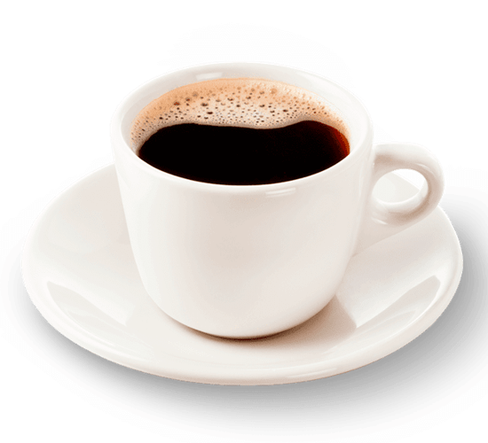
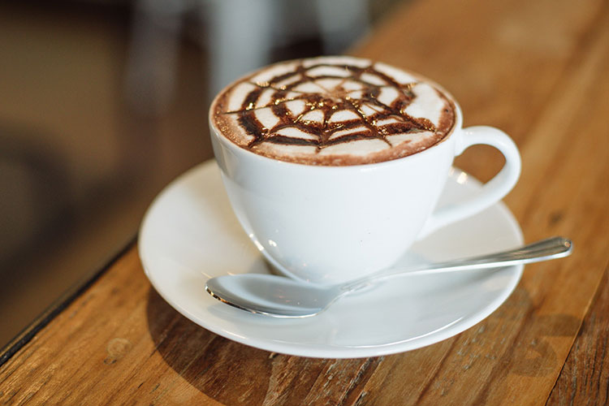
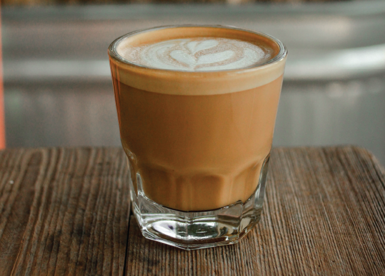

| Por la mañana apetece una buena taza de café, para muchos no hay otra forma de empezar el día. También acompaña las pausas en el trabajo o pone la guinda final a las comidas. Con el café estamos aprovechando numerosos beneficios. |
|  |  |  | |
| cafe americano | cafe capuchino | cafe cortado | cafe latte |
| 1. Rico en antioxidante
2. Activa la mente 3. Contribuye a la pérdida de peso |
4. Contra el dolor de cabeza
5. Combate el alzheimer 6. Es bueno para el corazón |
| VILLA EL SALVADOR | VILLA MARIA DEL TRIUNFO |
| > |